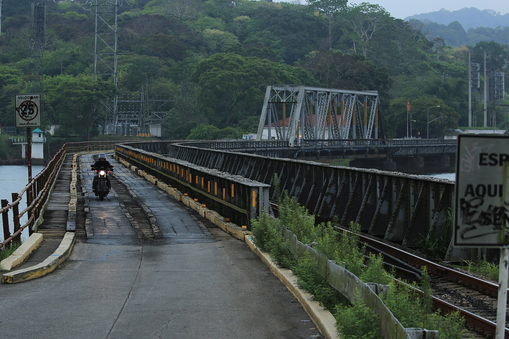

Chapter 2
The Engineer Who Measured the Isthmus
The rain gauge at Gamboa read 38 millimeters in a single hour on the afternoon of 15 November 1879. A French survey party working under the newly formed Compagnie Universelle du Canal Interocéanique took the reading and recorded it in a field notebook that would travel back to Paris in the chief engineer’s personal luggage. The Chagres River, running at a late-season low two days earlier, rose by more than two meters before the gauge reader had finished his calculations. The survey party retreated to higher ground. The notebook survived.
The reading entered no public document for another eighteen months. This was the first systematic measurement of the Chagres basin by engineers working for the company that intended to build a sea-level canal across the Isthmus of Panama. The congress that had chosen that design — the May 1879 International Congress for an Interoceanic Canal convened by Ferdinand de Lesseps at the Société de Géographie in Paris — had done so without the benefit of such readings.
Among the 136 delegates of 26 countries present at that congress, only 42 were engineers. The remainder were speculators, financiers, and political figures drawn to the prestige of Lesseps’s name. The congress had debated plans submitted by several route surveyors, including the French naval officer Lucien Napoléon Bonaparte Wyse, whose earlier surveys of the isthmus had established the general feasibility of a canal at Panama. But Wyse’s surveys were reconnaissance — broad measurements of distance, elevation, and drainage patterns — not the kind of engineering data that excavation would require. The congress knew that the Chagres flooded. It had been told. What it did not know, because no one had yet measured it systematically, was how much water came down, how fast, how often, and with what force.

The decision to build a sea-level canal had been a social and political event that presented itself as an engineering conclusion. Now the engineering began. Lucien Bonaparte Wyse had surveyed the isthmus twice before the congress, in 1876 and again in 1878.
His reports, submitted to the Société de Géographie and later published in abbreviated form, established the route that the congress would adopt: a channel from Colón on the Caribbean side to Panama City on the Pacific, following the Chagres valley for much of its length and crossing the continental divide at Culebra. Wyse was a naval officer, not a civil engineer. His measurements of the Culebra summit — he estimated the cut at roughly 64 meters above sea level — were derived from barometric readings taken during a traverse of the ridge. Barometric elevation measurements in the tropics were notoriously unreliable. Temperature, humidity, and atmospheric pressure variations could introduce errors of several meters. Wyse knew this. His report flagged the uncertainty. The congress did not.
The company’s first engineering teams arrived at the isthmus in late 1879 and early 1880. Their instructions were to confirm the route, refine the measurements, and prepare cost estimates for a sea-level canal. The instructions assumed the answer.
A lock canal, which would require less excavation at Culebra and could manage the Chagres through impoundment rather than diversion, was not among the designs they were sent to evaluate. Adolphe Godin de Lépinay, a French engineer who had served on the technical committee of the congress, had argued for a lock-and-lake canal that would dam the Chagres and use the resulting reservoir to feed a system of locks. His plan was recorded in the congress proceedings. The congress did not reject it on technical grounds. It set the plan aside, absorbed into the momentum of Lesseps’s preference for a sea-level channel, which mirrored his achievement at Suez.
The first detailed survey of the Culebra ridge was conducted in January 1880 by a team under the direction of the company’s chief engineering office in Panama. The findings were not encouraging. The ridge at Culebra was not a narrow spine of rock that could be cut through with a determined application of labor and explosives.
The ridge was a geological formation extending for hundreds of meters on either side of the proposed channel, composed of layered shale, volcanic tuff, and clay that, when exposed to rain, absorbed water and slid. The cut required for a sea-level canal — a channel roughly 30 meters deep at the summit, wide enough for two ships to pass — would produce a trench whose walls, in this material, would not hold. The survey team’s report noted the instability. It recommended further geological sampling before excavation began. The recommendation was filed.
The Culebra cut alone would have presented a formidable challenge. The Chagres River presented a different order of problem. The river crossed the proposed canal route at several points between Colón and the continental divide. A sea-level canal would require the river to be diverted — channeled away from the canal prism or carried across it by aqueduct or culvert. The engineering teams discovered, through the simple act of measuring, that the Chagres in flood carried a volume of water that no diversion channel of feasible size could contain.
The Gamboa gauge readings from November 1879 were not anomalous. The river rose and fell with the rains, sometimes by as much as ten meters in a single season. Its floodplain extended for kilometers. A sea-level canal cut through that floodplain would, during the rainy season, become a channel of the Chagres itself — not a canal but a river, and a river that would deposit silt into the canal prism faster than dredges could remove it.
The Pacific side presented its own difficulty. The tidal range at Panama City was extreme — roughly five meters between high and low tide, far greater than anything encountered at Suez. A sea-level canal opening onto the Pacific without a lock would, at low tide, expose the channel’s bottom; at high tide, it would create a current through the canal that no anchorage system could manage. The Suez Canal, which had no significant tidal range at either end, had not faced this problem. Lesseps’s engineers knew of the Pacific tides. The congress had been told.
But the tidal range had been treated as a matter of channel depth — dig deeper, and the tides become irrelevant — rather than as a dynamic force that would complicate every aspect of the canal’s operation. Armand Reclus arrived at the isthmus in January 1880 as the company’s resident engineer. Reclus was a naval officer and a man of considerable organizational talent.
He had served in the French navy’s colonial engineering service and had been recommended to Lesseps by contacts within the Geographical Society. His assignment was to establish the construction infrastructure — workshops, housing, supply lines, and a labor force — while the survey teams completed their measurements. Reclus began work at Colón, where the canal’s Atlantic entrance would be. He found a town of roughly 2, 500 inhabitants, no port facilities adequate for the volume of supplies the project would require, and a mortality rate among European residents that the local hospital registers recorded without comment.
The registers showed that yellow fever appeared in the town in epidemic cycles, and that the most recent outbreak, in 1878, had killed a significant portion of the foreign population. Reclus did not report this to Paris in his first dispatch. He reported on the harbor.
The survey teams worked through the dry season of 1880, when the Chagres was low and the terrain was passable. Their measurements accumulated in field notebooks and preliminary reports that traveled to the company’s Paris office in batches. The reports were technical documents — pages of figures, cross-sections, geological descriptions, and hydraulic calculations. They were addressed to the company’s engineering directorate, not to the board of directors or the shareholders. The directorate was expected to synthesize them into cost estimates and construction schedules. The directorate, in turn, reported to Lesseps. What the reports said, in aggregate, was that a sea-level canal at Panama would require more excavation than the congress had been told, would face hydraulic conditions that the design could not manage, and would encounter geological formations at Culebra that would resist mechanical excavation.
The cost estimates derived from these surveys exceeded the figures that had been presented to the congress by a significant margin. The precise margin is difficult to establish from surviving documents, because the company’s internal cost estimates were revised multiple times and the final figures submitted to the French government in support of the lottery bond authorization in 1881 differed from the field survey calculations. What is clear is that the direction of revision was always upward, and that the upward revisions were not accompanied by a public reconsideration of the sea-level design.
The gap between what the field teams reported and what the company’s promotional apparatus circulated is visible in the contrast between two categories of document. The field reports, held in the company’s engineering archives, described conditions in the language of measurement: cubic meters of earth to be moved, cubic meters per second of floodwater to be managed, meters of unstable slope to be shored up.
The company’s public bulletins and prospectus materials, issued to support the share subscription and later the bond sales, described the project in the language of progress: the canal was feasible, the route was confirmed, the surveys had validated the congress’s decision. Both documents were produced by the same organization. The field reports were authored by engineers whose names appeared on the title pages. The bulletins were issued under the company’s imprint and carried no individual attribution.
The engineers who produced the field reports were not unanimous in their conclusions. Some believed that a sea-level canal was possible given sufficient time and money. Others, including men who would later resign from the project, believed that the design was fundamentally incompatible with the conditions they were measuring. This division within the engineering staff is significant because it was not reported to shareholders or to the government regulators who would eventually oversee the lottery bond issue. The company’s communications with the outside world presented the engineering position as settled. Internally, it was not.
The first principal engineer to resign was Armand Reclus, who left the project in 1882. Later accounts attributed his resignation to discouragement, a word that does not appear in Reclus’s own correspondence, which has not been fully published. What the record shows is that Reclus departed after two years on the isthmus, during which the survey data had accumulated, the construction infrastructure had been built at considerable cost, and the excavation at Culebra had begun without resolving the geological questions the first surveys had raised. The company did not frame his departure as a protest. It framed it as a routine personnel change. The company appointed a successor. The work continued.
The Chagres River remained the central problem. Every survey team that measured it produced data that confirmed, in greater detail, what the congress had been told and had chosen to disregard. The river’s watershed covered roughly 1, 300 square kilometers of tropical rainforest. Annual rainfall in the watershed exceeded three meters, most of it falling between May and December.
The river’s discharge at Gamboa, where it would intersect the canal route, varied by a factor of more than one hundred between dry season and flood. No diversion channel of feasible dimensions could carry that volume. No dam of conventional design could impound it without creating a reservoir that would submerge the canal prism itself. The lock-canal design that Lépinay had proposed at the congress would have turned the Chagres from an obstacle into an asset — using the impounded water to fill the locks and maintain the channel depth. The sea-level design required the river to be eliminated from the canal’s hydraulic system. The river could not be eliminated.
The tidal data from the Pacific side presented a related problem. A sea-level canal connecting two bodies of water with different tidal regimes would function as a tidal channel — water flowing in and out with each tide cycle, carrying sediment, eroding the channel banks, and making navigation hazardous. The Suez Canal, connecting two seas with negligible tidal ranges, did not face this issue.
At Panama, the difference between the Caribbean tide, roughly 30 centimeters, and the Pacific tide, roughly 5 meters, would create a hydraulic head that no open channel could accommodate without massive scouring and deposition. The company’s engineers knew this. The company’s public materials did not mention it.
The Culebra cut presented a third category of problem. The ridge at Culebra was the continental divide — the highest point on the route, and the point at which a sea-level canal would require the deepest excavation. Wyse’s barometric estimate of roughly 64 meters had been accepted by the congress. The first triangulation surveys conducted by the company’s teams in 1880 produced a higher figure: the summit was closer to 95 meters above sea level, and the cut required for a sea-level channel would need to extend through unstable formations for a considerable distance on either side. The volume of material to be removed, calculated from these new measurements, exceeded the congress estimates by a factor that the engineering teams flagged in their reports. The revised figures were not published.
They were transmitted to the company’s directorate, where they entered a cycle of internal revision that would continue for several years before the full extent of the Culebra problem became a matter of public record.
The machinery available to excavate a cut of this scale through this material was, in 1880, limited. The company had ordered dredges of the type used at Suez — bucket dredges and suction dredges designed for soft sediment in a dry climate. The Culebra ridge was rock. The dredges that could cut through rock were not yet in production at the scale the project would require. The company’s engineers reported this limitation. The company’s procurement office continued to order Suez-type equipment.
The gap between the machinery available and the machinery required was a matter of industrial capacity, not of engineering judgment. No manufacturer in France or elsewhere in Europe was producing rock-excavating dredges of the size that the Culebra cut would demand. The project’s schedule assumed that such machinery would be developed. The assumption was not stated as an assumption.
The cost estimates embedded it as a line item for equipment. The organizational pattern visible in these months is straightforward and would recur throughout the company’s history. Field engineers produced measurements. The measurements contradicted the design parameters established by the congress. The contradiction was transmitted upward through the company’s engineering directorate, where it was processed as a problem of refinement — more surveys, better cost estimates, improved machinery — rather than as a challenge to the design itself. The design was fixed. The data was not. The data would be adjusted, supplemented, and reinterpreted until it could be made compatible with the design, or until it was filed and superseded by the next round of measurements.
This is the pattern that the company would follow until its collapse. The engineers’ measurements became field reports. The field reports became internal memoranda. The internal memoranda became cost estimates. The cost estimates became prospectus figures. At each stage, the margin of uncertainty narrowed on paper while widening in fact. Colombian observers recorded conditions that the French reports minimized.
The governor of Panama, in correspondence with the central government in Bogotá, noted the severity of the climate, the inadequacy of the local labor supply for a project of the proposed scale, and the frequency of epidemic disease in the canal zone. These observations were communicated to the French company through diplomatic channels. The company acknowledged them. The company’s public materials did not incorporate them.
Colombian officials also recorded their impression that the French engineers who arrived in 1879 and 1880 were unprepared for the conditions they encountered. This impression was accurate. The engineers were competent men operating within a design framework that their competence could not rescue.
The distinction between the sea-level canal and the lock canal was not a technical detail. It was the difference between a project that fought the isthmus’s hydrology and one that used it. A sea-level canal required the Chagres to be diverted, contained, or eliminated from the canal prism. A lock canal required the Chagres to be dammed, impounded, and channeled through the locks as a water supply.
The first approach treated the river as an enemy. The second treated it as an engine. The congress had chosen the first approach because it matched the Suez precedent — a sea-level channel, no locks, a simple trench between two seas. The precedent was a political and symbolic asset, not an engineering analysis.
The isthmus was not Suez. The Chagres was not a minor drainage ditch. The Pacific tide was not the Mediterranean tide. The Culebra ridge was not a sand bar.
The company’s engineering directorate received the field reports through 1880 and into 1881. The reports accumulated. The cost estimates rose. The construction schedule extended. The directorate’s response was to request additional surveys, which would produce additional data, which would confirm what the existing data already showed. The cycle of survey and absorption was not irrational from the directorate’s perspective. The design had been chosen by the congress. The company’s capitalization, its share offering, and its public credibility all depended on the design being correct.
To challenge the design was to challenge the congress, the company’s founder, and the financial structure that had been built on the congress’s decision. The directorate did not have the institutional authority to initiate such a challenge. The engineers in the field did not have the institutional standing to force one.
The measurements accumulated. The design held. By mid-1881, the company’s engineering archives contained sufficient data to construct a detailed technical case against the sea-level canal. The case had three elements: the Chagres could not be managed by diversion, the Culebra cut was deeper and more unstable than the congress had been told, and the Pacific tidal range would create operational conditions that a sea-level channel could not accommodate. Each element was supported by measurements taken by named engineers on dated surveys. Each measurement was recorded in a field notebook that was filed in the company’s archives. The notebooks existed. The data existed. The case existed. It existed inside the company, in documents that were not shared with shareholders, regulators, or the public.
The company’s first public report on the surveys, issued in 1881, summarized the field work in terms that a lay reader could understand. The route was confirmed. The surveys had validated the congress’s decision. The Chagres would be managed by diversion channels and a dam. The Culebra cut was feasible. The tidal range was manageable.
The report did not cite the specific measurements that supported these conclusions. It did not name the engineers who had produced them. It did not mention the internal disagreement among the engineering staff. It did not reference the cost estimates that the field surveys had generated. It was a document of advocacy, not of analysis. It was issued under the company’s imprint and signed by Lesseps.
The field engineers continued to work. Their measurements continued to accumulate. The reports continued to travel to Paris, where they were received by an engineering directorate that could not act on them and processed by a company leadership that would not. The design was fixed. The capital was being raised. The subscription books had opened in 1880 and closed oversubscribed.
The money was flowing in. The isthmus was being cleared. The dredges were arriving. The reports were filed. The engineers’ warnings sat in the company’s archives, documented and unaddressed, while the capital raised against the sea-level design continued to grow.